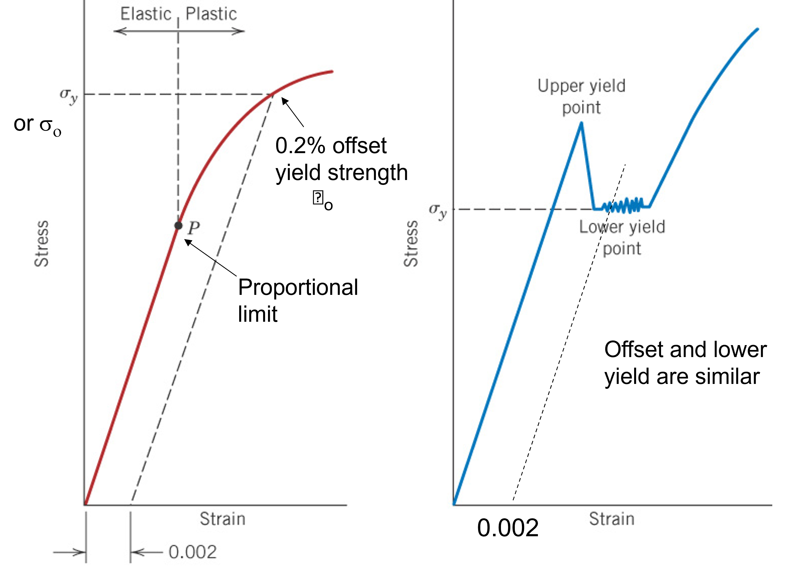
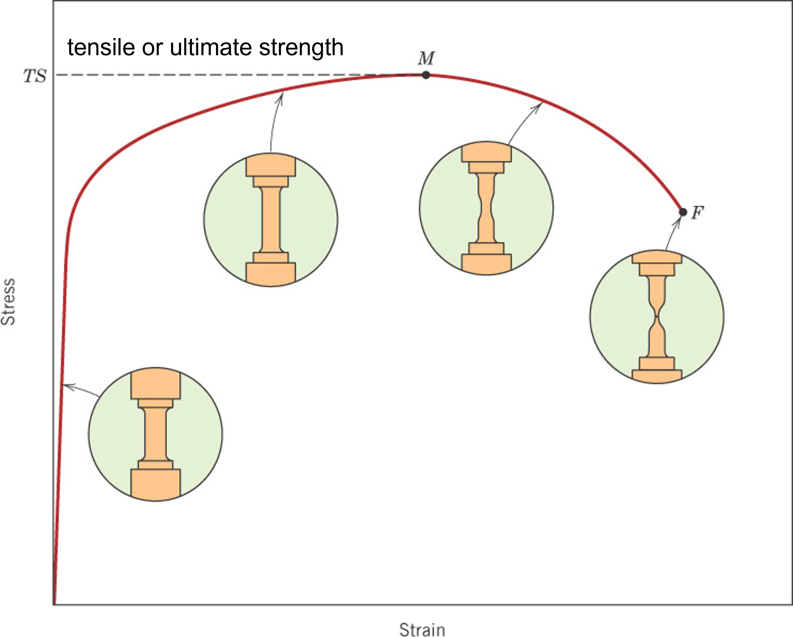
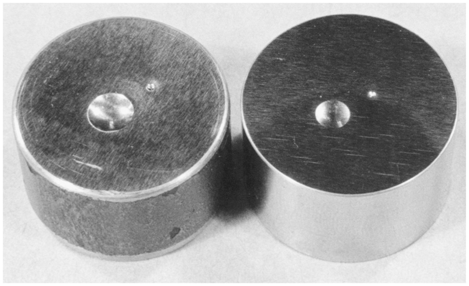
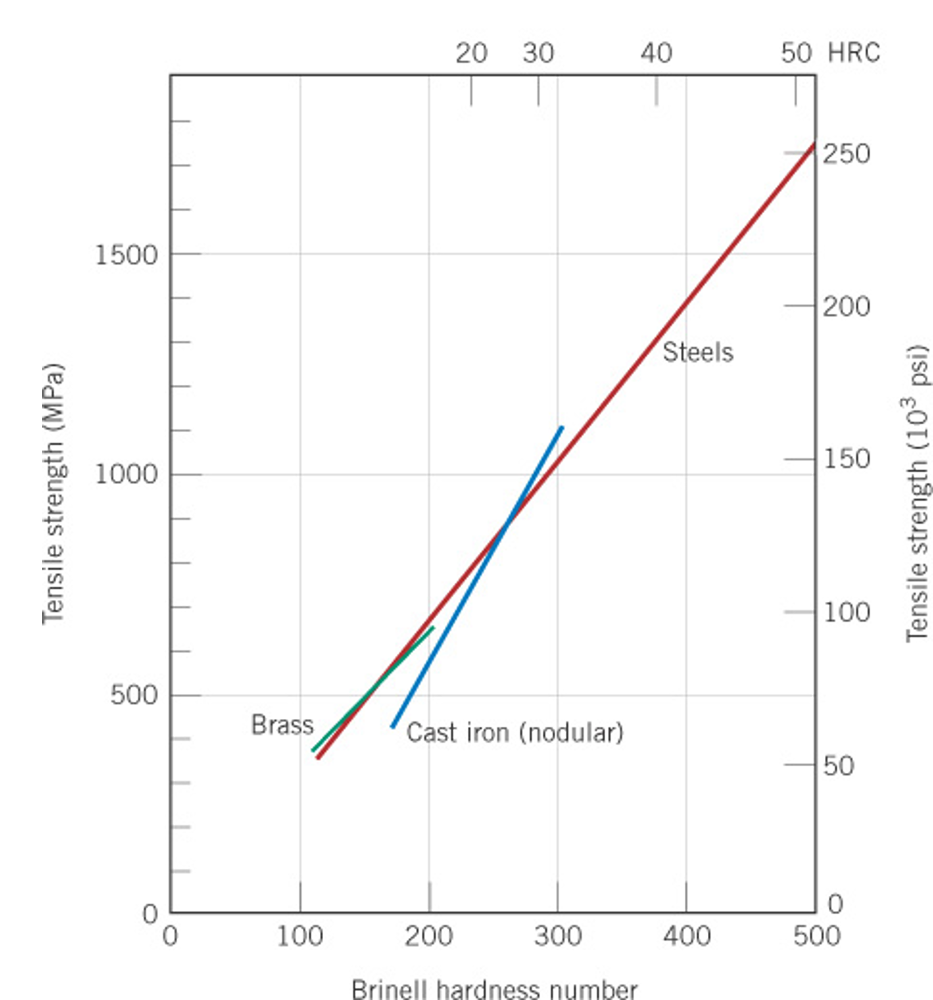

Video Lessons
Properties from Stress-Strain
Comparison of Stress-Strain Data
Hardness & Correlation to Tensile Strength
Stress-Strain data: Beyond the elastic region
Figure caption: Stress-strain data for Aluminum 7075-T651. The full curve to failure is labeled "Curve 2" and uses the top axis (0 to 16% strain). The initial data is labeled as "Curve 1" and uses the bottom axis (0 to 1.6% strain). Curve 1 allows for a more accurate determination of the elastic modulus and yield strength.
- Proportional limit:
The value of stress at which the stress-strain curve deviates from Hooke's law i.e. linear elastic behavior. Below this limit, the sample behaves elastic and will return to its original length upon removal of the applied load. A convention for determing the proportional limit was not established but rather a practical limit (the yield strength) was established.
-
Yield Strength (\( \sigma_y \)):
The 0.002 (or 0.2%) offset yield strength was established as a consistent method to determine the change from elastic to elastic-plastic behavior. Note: The yield stregth is slightly higher than the proportional limit but this difference is typically inconsequential.
The method: A line is drawn parallel to the elastic region (slope of the elastic modulus) and then offset by a strain of 0.002. The point where this line and the stress-strain cuve intersect is taken as the yield strength. The method is shown in both the figure above and the below.
This method also avoids overestimating the yield strength for systems that have an upper and lower yield point (typical of some steels) as shown in the second graph in the figure to the left. Notice that the yield strength falls within the lower region.
 - Tensile Strength:
The maximum stress a material can withstand before breaking. In brittle materials, this value will also be the fracture stress. In ductile materials, the stress will reach a maximum at the tensile strength and then decrease prior to fracture. As shown in the figure, the maximum is where the sample begins to neck.
Beyond the tensile test
- 
Hardness:
A material’s resistance to deformation, traditionally measured using Rockwell or Brinell hardness machines. For the case of thin films, brittle materials, or multi-phased materials, micro or nano-indentation instruments are a better choice.
Most modern nano-indentation machinces offer methods of imaging the surface in-situ thus allowing for the exact placement of the indenter tip to test microstructural features. The instruments are also capable of determining the local elastic modulus.
Hardness tests require very little sample preparation and setup as compared to performing a tensile test. By correlating hardness with either tensile strength or yield strength for a given family of materials, indentation testing becomes a rapid, reliable and low cost method of quality control.
The figure below shows the correlation between Brinell hardness and tensile strength for brass, steel, and cast iron.

Looking ahead: Toughness
Toughness: a measure of a material's resistance to fracture. For most materials, low temperatures result in a more brittle response. We will discuss this in detail in Modulue 8 on failure mechanisms. The steel used in the titanic became brittle at the temperatures of the sea water. Fracture of the hull was inevitable.